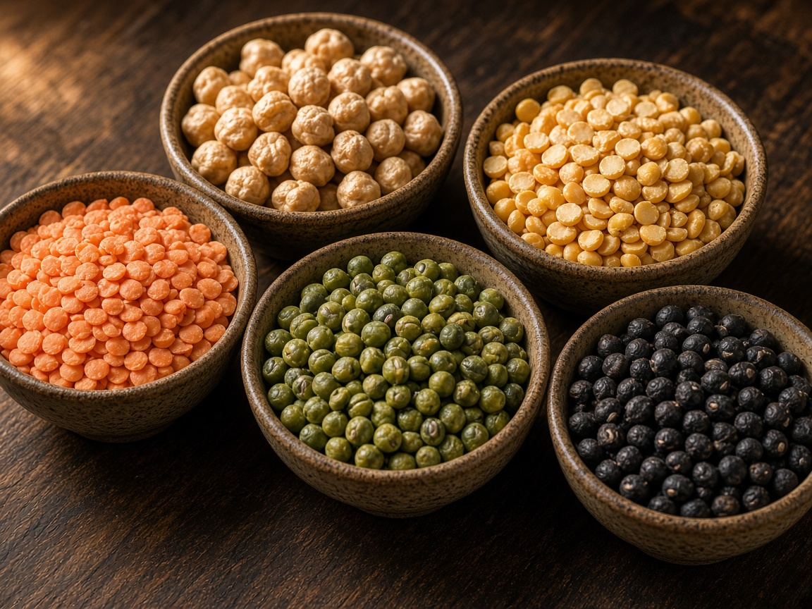
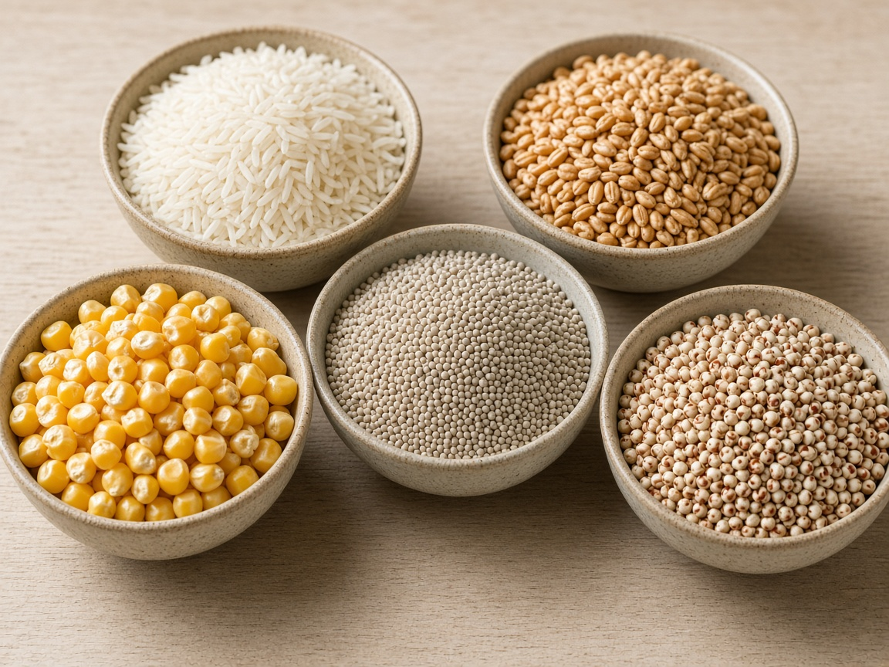
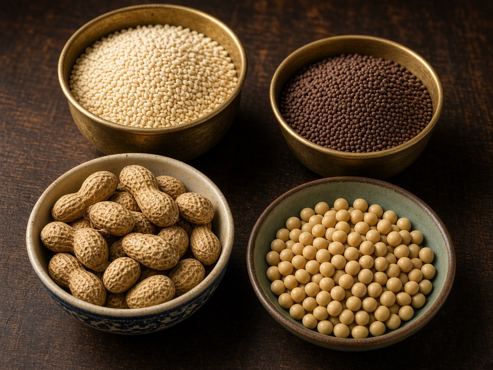
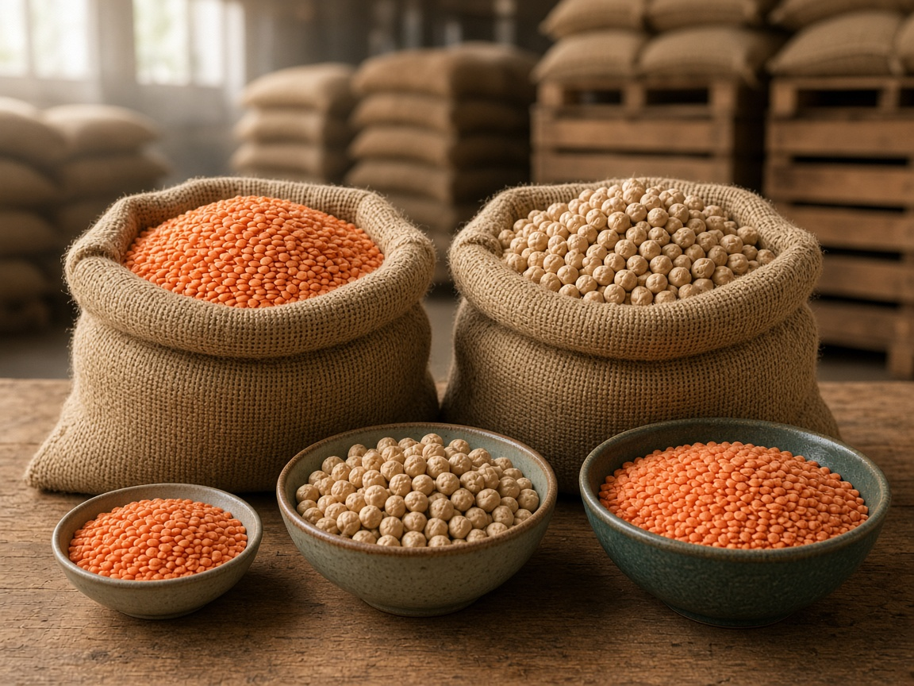

Pulses & Lentils
Protein-rich pulses sorted for size and purity, drawn from the belts known for that crop.
Request pulse quote
Seawyn · Pulses
Pulses, lentils, grains and oilseeds sourced directly from Indian farms. Machine-cleaned, graded and packed for high nutrition and a long shelf life.
What We Export
Tell us the crop, the grade and the destination. Seawyn matches size, purity and packing so every consignment matches the sample you approved.
Stones, dust and broken grains are removed before the lot is graded.
Size, colour and purity are held to the sample you approved.
Export bags and lining chosen for nutrition and a long shelf life.

Protein-rich pulses sorted for size and purity, drawn from the belts known for that crop.
Request pulse quote
Staple grains selected for moisture, cleanliness and the milling quality you specify.
Request grain quote
Clean oilseeds for crushing and food use, matched to the grade and destination you name.
Request oilseed quoteHow a Pulse Order Moves
Tell us the crop, grade, packing and port.
We send a sample as per your need. You can check size and colour.
We clean the approved lot by machine and check size and quality.
We do export packing, papers and tracking. Quote mostly in 24 hours.
Why Buy Pulses from Seawyn

India grows it.
Seawyn ships the grain.